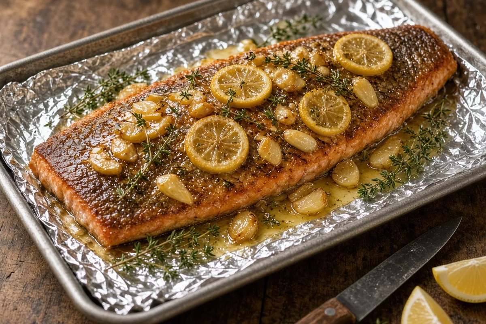

Sheet-Pan Roasted Salmon Side with Lemon-Garlic Butter
A whole 4-pound skin-on salmon side roasted at 425°F with lemon-garlic butter and thyme; a weeknight dinner that serves 8 to 10 with leftovers for lunches or salmon cakes.

By
Yield: 8 to 10 servings
Prep:
Cook:
Total: , plus 5 minutes rest, not counted in the total
Difficulty: Easy
Ingredients
- 1 whole skin-on salmon side, about 4 lb
- 2 1/2 teaspoons kosher salt
- 1 1/4 teaspoons black pepper
- 3 tablespoons avocado oil, divided (2 tablespoons for the pan, 1 tablespoon for the salmon)
- 8 tablespoons butter, melted
- 8 garlic cloves, smashed
- 8 sprigs fresh thyme (or 1 teaspoon dried)
- 2 lemons, 1 sliced and 1 cut into wedges
- Chopped fresh parsley, for finishing (optional)
- 2 bunches asparagus (about 2 lb), trimmed, optional
- 1 tablespoon avocado oil, for the asparagus
Instructions
- Heat the oven to 425°F with racks in the upper and lower thirds. Line a rimmed 18x13-inch half-sheet pan with foil and rub it with 2 tablespoons of the avocado oil. If you are roasting asparagus, line a second sheet pan, 10 minutes.
- Pat the salmon very dry, including the skin, and lay it skin side down on the oiled foil. If the side is longer than the pan, angle it or tuck the thin tail slightly, 3 minutes.
- Melt the butter. Rub the flesh with the remaining 1 tablespoon avocado oil or some of the melted butter, then season with the salt and pepper. Spoon the remaining butter over the top, scatter the smashed garlic and thyme, and lay the lemon slices on the fish, 5 minutes.
- Roast the salmon on the upper rack. If using asparagus, toss it with the 1 tablespoon avocado oil, salt, and pepper, spread it on the second pan, and put it on the lower rack for the last 10 to 12 minutes. Start checking the thickest part of the salmon at 15 minutes; it usually takes 18 to 22 minutes depending on thickness.
- Pull the salmon at 125 to 130°F in the thickest part for medium, or 145°F if you want it fully done. If it is still under temperature, roast 3 to 5 minutes more and check again. Rest 5 minutes.
- Spoon the pan butter and lemon juices over the salmon, finish with parsley if using, and serve with lemon wedges, 2 minutes.
Notes: This is written for one whole 4-pound skin-on side, the way the salmon is usually bought, and it serves 8 to 10 with planned leftovers for lunches or salmon cakes. The skin holds the fillet together on the pan, but it will not crisp on foil in the oven; leave it on the pan or peel it away as you portion. A standard 18x13-inch half-sheet pan fits a typical side; do not use a 9x13 or a skillet for this size. Serve with rice and the asparagus. Leftovers keep 2 days in the fridge and are best cold, flaked over a salad, or turned into salmon cakes, since reheating dries salmon out.